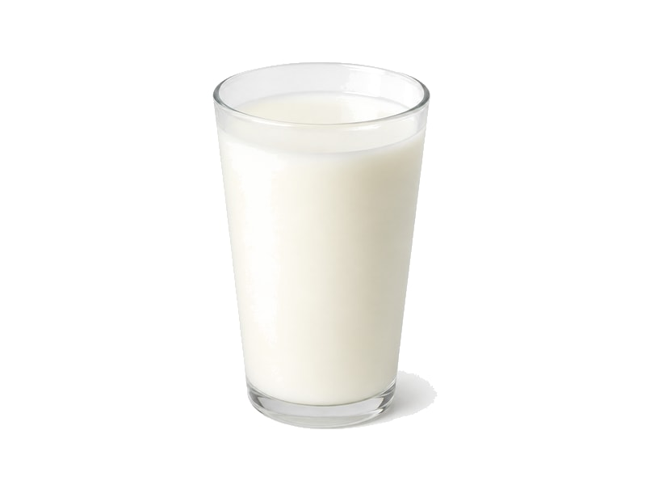

Nabiał i jaja
Jogurt pitny
Jogurt pitny: 2.8 g białka, 62 kcal, 11 g węglowodanów i 1 g tłuszczu na 100 g. Kategoria: Nabiał i jaja.
Kalorie62 kcalna 100 g
Białko / proteiny2.8 g
Węglowodany11 g
Tłuszcz1 g
Cena (szac.)~0,84 złza 100 g
Ceny zaktualizowano: maj 2026 (szacunek — ceny w popularnych supermarketach)
Porcja: butelka (250g)
| Kalorie | 155 kcal |
|---|---|
| Białko | 7 g |
| Węglowodany | 27.5 g |
| Tłuszcz | 2.5 g |
| Cena (szac.) | ~2,09 zł |
Szczegółowe składniki odżywcze na 100 g
| Wartość energetyczna (kalorie) | 62 kcal |
|---|---|
| Białko (proteiny) | 2.8 g |
| Węglowodany | 11 g |
| Tłuszcz | 1 g |
| Tłuszcze nasycone | 0.6 g |
| Tłuszcze nienasycone | 0.4 g |
| Witaminy i minerały | Wapń, Witamina B2, Fosfor |
| Współczynnik kcal / 1 g białka | 22.1 |
| Cena produktu (szac. za 100 g) | ~0,84 zł |
| Cena za 100 g białka (szac.) | ~29,86 zł |